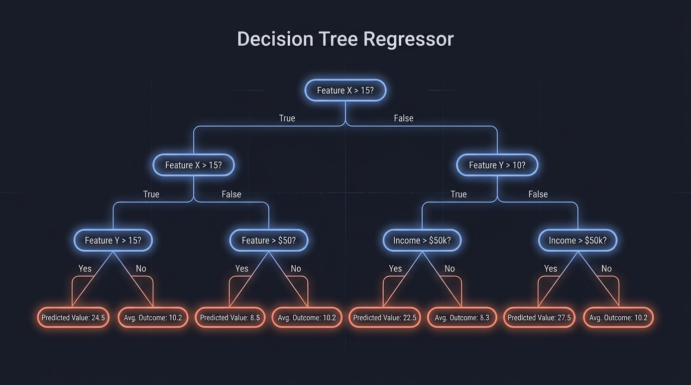
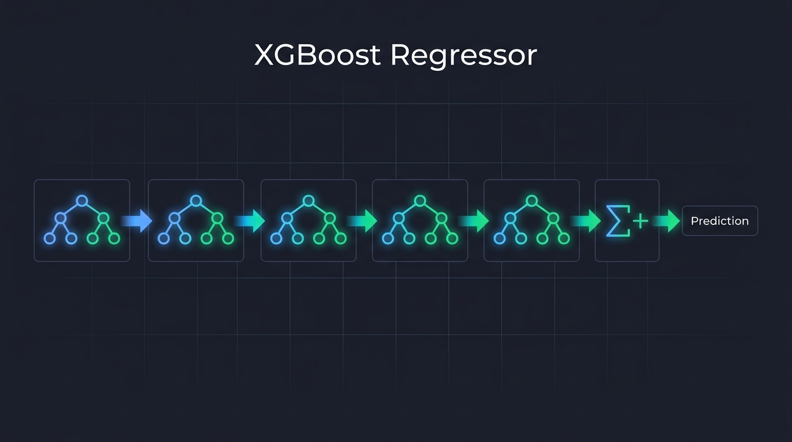
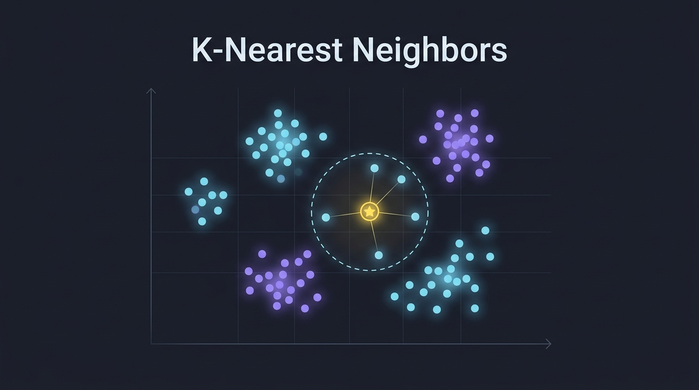
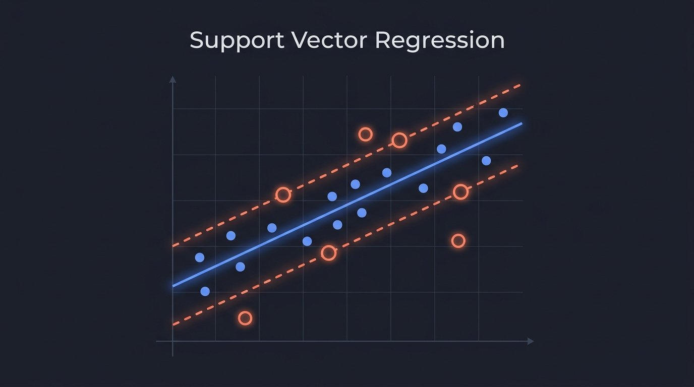
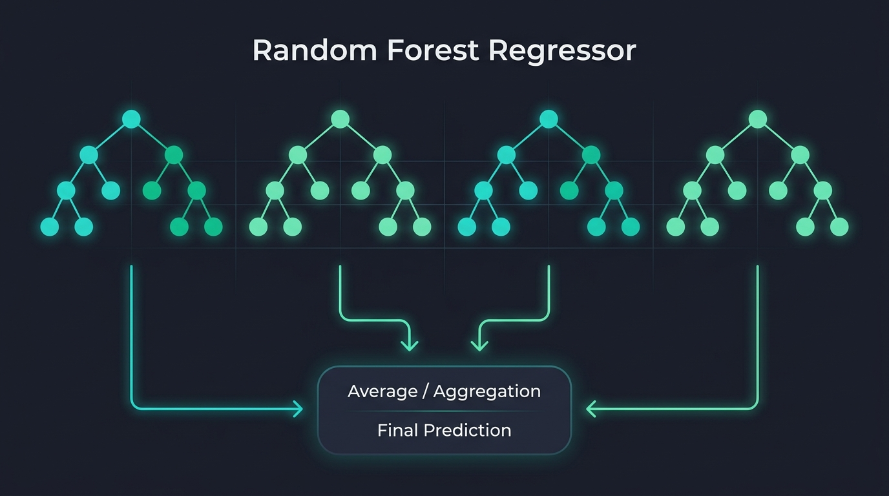

The Math Behind ML Regressors
Five regression models — all pointing at the same goal of predicting a continuous output — yet each one reaches that goal through a completely different mathematical lens. In this post I walk through the core terminology, the governing equations, and — most importantly — why those equations make a model strong or weak for particular kinds of data, all without touching a single dataset or line of code. The math speaks for itself.
01Decision Tree Regressor

Image generated using DALL·E 3Key Terms
| Term | What it means |
|---|---|
| Node | A decision point that tests one feature against a threshold |
| Split | The act of dividing a node's data into two child groups based on a threshold |
| Leaf | A terminal node that holds the predicted value — no further splitting |
| Impurity / Variance | How spread-out the target values are inside a node |
| Information Gain | How much a split reduces variance — the criterion the tree maximizes |
| max_depth | Hard limit on how many levels the tree may grow |
| min_samples_split | Minimum samples a node must contain before it is allowed to split |
The Mathematics
A decision tree recursively partitions the feature space $\mathcal{X} \subseteq \mathbb{R}^p$ into axis-aligned rectangular regions $R_1, R_2, \dots, R_M$ and assigns each region a constant prediction. For regression the splitting criterion is variance reduction.
At any node containing sample indices $\mathcal{S}$, the variance of the targets is:
$$ \text{Var}(\mathcal{S}) = \frac{1}{|\mathcal{S}|} \sum_{i \in \mathcal{S}} \left(y_i - \bar{y}_\mathcal{S}\right)^2 $$where $\bar{y}_\mathcal{S}$ is the mean target in that node. A candidate split on feature $j$ at threshold $t$ divides $\mathcal{S}$ into:
$$ \mathcal{S}_L = \{i \in \mathcal{S} : x_{ij} \le t\}, \qquad \mathcal{S}_R = \{i \in \mathcal{S} : x_{ij} > t\} $$The variance reduction (information gain for regression) achieved by this split is:
$$ \Delta\text{Var} = \text{Var}(\mathcal{S}) - \frac{|\mathcal{S}_L|}{|\mathcal{S}|}\,\text{Var}(\mathcal{S}_L) - \frac{|\mathcal{S}_R|}{|\mathcal{S}|}\,\text{Var}(\mathcal{S}_R) $$The tree greedily picks the $(j^*, t^*)$ pair that maximises $\Delta\text{Var}$. Once a leaf $R_m$ is formed, its prediction is simply the mean of all training targets that fall into it:
$$ \hat{y}(\mathbf{x}) = \frac{1}{|R_m|} \sum_{i \in R_m} y_i \quad \text{for all } \mathbf{x} \in R_m $$Why This Formula Makes the Model Behave the Way It Does
02XGBoost Regressor

Image generated using DALL·E 3Key Terms
| Term | What it means |
|---|---|
| Boosting | Sequential ensemble technique where each new model corrects the residual errors of all previous models |
| Residual / Pseudo-residual | The negative gradient of the loss — what the next tree is trained on |
| Learning rate $\eta$ | Shrinkage applied to each tree's contribution to prevent overcorrecting |
| Regularisation $\lambda, \gamma$ | Penalties on leaf weights and tree complexity baked into XGBoost's objective |
| Gain | XGBoost's split score — information gain adjusted by regularisation terms |
| n_estimators | Number of trees (boosting rounds) |
| max_depth | Maximum depth of each individual tree (kept shallow, typically 3–6) |
The Mathematics
XGBoost builds an additive model. After $K$ boosting rounds, the prediction is:
$$ \hat{y}_i^{(K)} = \sum_{k=1}^{K} f_k(\mathbf{x}_i) $$where each $f_k$ is a regression tree. At round $t$, the new tree $f_t$ is found by minimising a regularised second-order Taylor expansion of the loss:
$$ \mathcal{L}^{(t)} \approx \sum_{i=1}^{n} \left[ g_i\, f_t(\mathbf{x}_i) + \tfrac{1}{2}\, h_i\, f_t(\mathbf{x}_i)^2 \right] + \Omega(f_t) $$where $g_i$ and $h_i$ are the first and second derivatives (gradient and Hessian) of the loss with respect to the current prediction $\hat{y}_i^{(t-1)}$:
$$ g_i = \frac{\partial \ell(y_i,\, \hat{y}_i^{(t-1)})}{\partial \hat{y}_i^{(t-1)}}, \qquad h_i = \frac{\partial^2 \ell(y_i,\, \hat{y}_i^{(t-1)})}{\partial (\hat{y}_i^{(t-1)})^2} $$The regularisation term penalises tree complexity:
$$ \Omega(f_t) = \gamma T + \frac{\lambda}{2}\sum_{j=1}^{T} w_j^2 $$where $T$ is the number of leaves and $w_j$ is the weight (output value) of leaf $j$. The optimal weight for leaf $j$ and the corresponding split gain are:
$$ w_j^* = -\frac{\sum_{i \in R_j} g_i}{\sum_{i \in R_j} h_i + \lambda} $$ $$ \text{Gain} = \frac{1}{2} \left[ \frac{\left(\sum_{i \in \mathcal{S}_L} g_i\right)^2}{\sum_{i \in \mathcal{S}_L} h_i + \lambda} + \frac{\left(\sum_{i \in \mathcal{S}_R} g_i\right)^2}{\sum_{i \in \mathcal{S}_R} h_i + \lambda} - \frac{\left(\sum_{i \in \mathcal{S}} g_i\right)^2}{\sum_{i \in \mathcal{S}} h_i + \lambda} \right] - \gamma $$Each tree's contribution is then shrunk by the learning rate before being added:
$$ \hat{y}_i^{(t)} = \hat{y}_i^{(t-1)} + \eta \cdot f_t(\mathbf{x}_i) $$Why This Formula Makes the Model Behave the Way It Does
03k-Nearest Neighbors (KNN)

Image generated using DALL·E 3Key Terms
| Term | What it means |
|---|---|
| $k$ | The number of neighbors to consider when making a prediction |
| Distance metric | Function that quantifies how "close" two data points are in feature space |
| Euclidean distance | Straight-line distance in $\mathbb{R}^p$ — the default metric |
| Manhattan distance | Sum of absolute differences along each dimension |
| Minkowski distance | General family that subsumes Euclidean ($p=2$) and Manhattan ($p=1$) |
| Lazy learner | KNN stores the entire training set and defers all computation to prediction time — there is no training phase |
| Curse of dimensionality | In high-dimensional spaces, distances between all points converge, making "nearest" meaningless |
The Mathematics
KNN is a non-parametric, instance-based method. It stores the entire training set $\mathcal{D} = \{(\mathbf{x}_i, y_i)\}_{i=1}^{N}$ and, at prediction time, finds the $k$ training points closest to a query $\mathbf{x}^*$.
The Minkowski distance of order $p$ between $\mathbf{x}^*$ and training point $\mathbf{x}_i$ is:
$$ d_p(\mathbf{x}^*, \mathbf{x}_i) = \left(\sum_{j=1}^{n} \left|x^*_j - x_{ij}\right|^p\right)^{1/p} $$The Euclidean case ($p=2$) is the most common:
$$ d(\mathbf{x}^*, \mathbf{x}_i) = \sqrt{\sum_{j=1}^{n} \left(x^*_j - x_{ij}\right)^2} $$Let $\mathcal{N}_k(\mathbf{x}^*)$ be the index set of the $k$ training points with smallest distance to $\mathbf{x}^*$. The prediction is the (optionally distance-weighted) mean of their targets:
$$ \hat{y}(\mathbf{x}^*) = \frac{1}{k} \sum_{i \in \mathcal{N}_k(\mathbf{x}^*)} y_i \quad \text{(uniform weights)} $$ $$ \hat{y}(\mathbf{x}^*) = \frac{\displaystyle\sum_{i \in \mathcal{N}_k(\mathbf{x}^*)} \frac{y_i}{d(\mathbf{x}^*, \mathbf{x}_i)}} {\displaystyle\sum_{i \in \mathcal{N}_k(\mathbf{x}^*)} \frac{1}{d(\mathbf{x}^*, \mathbf{x}_i)}} \quad \text{(distance weights)} $$The hyperparameter $k$ controls the bias-variance tradeoff:
$k = N$: constant prediction equal to the global mean, maximum bias (underfitting).
Optimal $k$ lies somewhere between — typically found by cross-validation.
Why This Formula Makes the Model Behave the Way It Does
04Support Vector Regression (SVR)

Image generated using DALL·E 3Key Terms
| Term | What it means |
|---|---|
| Hyperplane | The regression surface $f(\mathbf{x}) = \mathbf{w}^\top \mathbf{x} + b$ — a flat affine subspace in feature space |
| $\varepsilon$-tube (insensitive zone) | A margin of width $2\varepsilon$ around the regression line — errors inside are ignored entirely |
| Support vectors | Only the training points that lie on or outside the tube; all others have zero influence |
| Slack variables $\xi_i, \xi_i^*$ | The extra error absorbed by points that fall outside the $\varepsilon$-tube |
| Regularisation $C$ | Penalty for violations of the tube — large $C$ tries harder to fit all points, small $C$ allows more violation |
| Kernel $K(\mathbf{x}_i, \mathbf{x}_j)$ | Implicit feature map to a higher-dimensional space — enables non-linear regression without explicit expansion |
| Dual variables $\alpha_i, \alpha_i^*$ | Lagrange multipliers from the dual problem; non-zero only for support vectors |
The Mathematics
SVR seeks a function $f(\mathbf{x}) = \mathbf{w}^\top \mathbf{x} + b$ that fits the training data within a tube of half-width $\varepsilon$, while being as flat as possible (small $\|\mathbf{w}\|$). Flatness acts as regularisation, preventing overfitting. The primal optimisation problem is:
$$ \min_{\mathbf{w},\, b,\, \xi,\, \xi^*} \quad \frac{1}{2}\|\mathbf{w}\|^2 + C\sum_{i=1}^{n}\left(\xi_i + \xi_i^*\right) $$subject to the constraints:
$$ y_i - \mathbf{w}^\top \mathbf{x}_i - b \;\le\; \varepsilon + \xi_i, \qquad \xi_i \ge 0 $$ $$ \mathbf{w}^\top \mathbf{x}_i + b - y_i \;\le\; \varepsilon + \xi_i^*, \qquad \xi_i^* \ge 0 $$The $\varepsilon$-insensitive loss function used implicitly is:
$$ L_\varepsilon(y, f) = \begin{cases} 0 & \text{if } |y - f| \le \varepsilon \\ |y - f| - \varepsilon & \text{otherwise} \end{cases} $$Introducing Lagrange multipliers $\alpha_i, \alpha_i^* \ge 0$, the dual problem yields the solution:
$$ \mathbf{w} = \sum_{i=1}^{n} (\alpha_i - \alpha_i^*)\, \mathbf{x}_i $$ $$ f(\mathbf{x}) = \sum_{i=1}^{n} (\alpha_i - \alpha_i^*)\, K(\mathbf{x}_i, \mathbf{x}) + b $$where $K(\mathbf{x}_i, \mathbf{x}) = \phi(\mathbf{x}_i)^\top \phi(\mathbf{x})$ is the kernel function. Common kernels:
| Kernel | Formula | Use case |
|---|---|---|
| Linear | $K(\mathbf{x}_i, \mathbf{x}_j) = \mathbf{x}_i^\top \mathbf{x}_j$ | Linearly separable data |
| RBF / Gaussian | $K(\mathbf{x}_i, \mathbf{x}_j) = \exp\!\left(-\gamma\|\mathbf{x}_i - \mathbf{x}_j\|^2\right)$ | Non-linear, smooth patterns |
| Polynomial | $K(\mathbf{x}_i, \mathbf{x}_j) = (\mathbf{x}_i^\top \mathbf{x}_j + c)^d$ | Polynomial relationships |
Crucially, only the support vectors (points where $\alpha_i - \alpha_i^* \ne 0$) enter the prediction sum. The $\varepsilon$-insensitive loss ensures that the majority of training points contribute zero to this sum.
Why This Formula Makes the Model Behave the Way It Does
05Random Forest Regressor

Image generated using DALL·E 3Key Terms
| Term | What it means |
|---|---|
| Bagging (Bootstrap Aggregating) | Each tree is trained on a random bootstrap sample (drawn with replacement) of the training data |
| Bootstrap sample | A sample of size $N$ drawn with replacement from the original $N$ training points — ~63% unique points per sample |
| Out-of-Bag (OOB) sample | The ~37% of training points not drawn for a given tree — used as a free validation set |
| Feature subsampling ($m_{try}$) | At each split only a random subset of $m_{try}$ features are considered — the key decorrelation step |
| n_estimators | Number of trees in the forest; more trees = lower variance, diminishing returns after a point |
| Aggregation | Final prediction = average of all individual tree predictions (regression) |
| Feature importance | Mean decrease in impurity (or permutation importance) averaged across all trees and all splits on that feature |
The Mathematics
A Random Forest is a bagged ensemble of $B$ decorrelated decision trees. It introduces two sources of randomness — bootstrap sampling and feature subsampling — to reduce the variance of the ensemble without inflating bias.
Step 1 — Bootstrap sampling: For tree $b = 1, \dots, B$, draw a bootstrap dataset:
$$ \mathcal{D}^{(b)} = \{(\mathbf{x}_{i_1}, y_{i_1}),\dots, (\mathbf{x}_{i_N}, y_{i_N})\} \quad \text{where } i_1, \dots, i_N \overset{\text{i.i.d.}}{\sim} \text{Uniform}\{1,\dots,N\} $$Step 2 — Feature subsampling: At every split node within tree $b$, only a random subset of $m_{try}$ features is considered:
$$ m_{try} \approx \frac{p}{3} \quad \text{(regression default)} $$where $p$ is the total number of features. The split is then chosen to maximise variance reduction over only those $m_{try}$ candidate features.
Step 3 — Aggregation (averaging): The forest prediction for a query $\mathbf{x}^*$ is the simple average over all $B$ trees:
$$ \hat{y}_{\text{RF}}(\mathbf{x}^*) = \frac{1}{B} \sum_{b=1}^{B} f_b(\mathbf{x}^*) $$The variance of this average over an ensemble of correlated trees with individual variance $\sigma^2$ and pairwise correlation $\rho$ is:
$$ \text{Var}\!\left[\hat{y}_{\text{RF}}\right] = \rho \sigma^2 + \frac{1-\rho}{B}\, \sigma^2 $$As $B \to \infty$ the second term vanishes, leaving $\rho \sigma^2$ as the irreducible ensemble variance. Reducing $\rho$ between trees is exactly the job of feature subsampling — it is the mathematical engine behind the forest's power.
The OOB error is computed without a separate validation set: for each training point $i$, only the trees for which $i$ was not in the bootstrap sample make a prediction:
$$ \hat{y}_i^{\text{OOB}} = \frac{1}{|\mathcal{B}^{-i}|} \sum_{b \in \mathcal{B}^{-i}} f_b(\mathbf{x}_i) $$ $$ \text{OOB MSE} = \frac{1}{N} \sum_{i=1}^{N} \left(y_i - \hat{y}_i^{\text{OOB}}\right)^2 $$where $\mathcal{B}^{-i}$ is the set of trees whose bootstrap sample did not include point $i$.
Why This Formula Makes the Model Behave the Way It Does
Side-by-Side Summary
| Model | Core idea | Training cost | Extrapolation? | Needs scaling? |
|---|---|---|---|---|
| Decision Tree | Greedy variance-reduction splits → piecewise constant | $O(N p \log N)$ | No | No |
| XGBoost | Sequential trees on 2nd-order loss residuals + regularisation | $O(K \cdot N p \log N)$ | No | No |
| KNN | Average of $k$ nearest neighbors — zero training | $O(1)$ train, $O(Np)$ predict | Partially | Yes |
| SVR | Flat hyperplane inside $\varepsilon$-tube, kernel trick for non-linearity | $O(N^2)$–$O(N^3)$ | Yes (with RBF) | Yes |
| Random Forest | Bagged + decorrelated deep trees → averaged prediction | $O(B \cdot N \sqrt{p} \log N)$ | No | No |